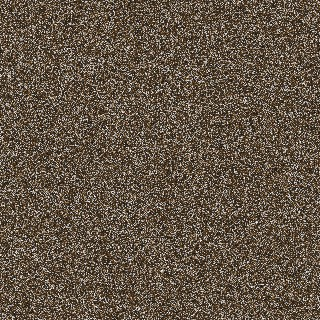
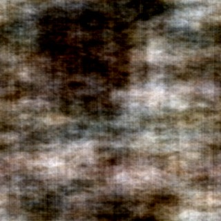

What a metamer is
A metamer is a stimulus that is physically different from another but looks the same to an observer. The word comes from Greek: meta, change, and meros, part. The parts differ; the whole looks the same.
More formally: if a visual system turns an image x into a representation f(x), then two images x₁ ≠ x₂ are metamers when
f(x₁) = f(x₂)The system cannot tell them apart, because it has thrown away whatever made them different.
The classic example: color
Light reaching your eye is a full spectrum, with energy at every wavelength. Your retina reduces it to just three numbers: the responses of your three types of cone cells, called L, M and S (long, medium and short wavelengths). A spectrum has many dimensions; you keep three. So countless different spectra give the same three cone responses, and look like the same color.
Try it. On the left is pure yellow light at 580 nm. On the right, mix a red light (620 nm) and a green light (540 nm) until your cones respond exactly as they do to the yellow.
Yellow light, 580 nm
Your mix: red + green
Move the sliders until the bars match.
You use this every day. Your screen has no yellow pixels: it makes yellow by lighting red and green subpixels side by side. It does not reproduce the spectrum of a banana, only something that gives your cones the same three numbers. Every screen is a metamer machine.
From a normal distance: yellow.
Why metamers matter
Metamers exist whenever a system maps many inputs to one output, and every real perceptual system does. That makes them a scientific tool:
- Metamers reveal what a system discards. If two images look identical, whatever differs between them is information your visual system does not use, at least under those viewing conditions.
- They flip the question. Instead of asking "what does vision see?", ask "what can I change without anyone noticing?" The answer tells you the system's invariances.
Beyond color: texture
The same logic scales up from cones to the rest of the visual system. In the 1960s, Bela Julesz proposed that two textures with the same simple statistics would look identical. That early version turned out to be wrong. You can see why by keeping some statistics of a photo and destroying the rest:

Same pixels, shuffled
Same frequencies, scrambledThe approach survived with richer statistics. Portilla and Simoncelli (2000) measured hundreds of statistics of the outputs of a bank of oriented, multi-scale filters, like the Gabor filters we will meet on Day 3. Matching those statistics produces textures that look like the same "stuff", even though every pixel is different. In the Day 3 lab you will make these yourself with plenoptic.
Peripheral vision
Freeman and Simoncelli (2011) applied the idea to whole scenes. Away from where you are looking, vision seems to keep only texture-like summary statistics, pooled over regions that grow larger the farther they are from the center of gaze. They synthesized images that match those statistics. While a viewer fixates the center, a heavily scrambled image looks the same as the original. Look at it directly, and the scrambling is obvious.
The figures in their paper are worth a look: Metamers of the ventral stream.
How metamers are made
The recipe is simple, and it uses tools you will build in this course:
- Pick a model of the visual system: a set of filters, plus statistics computed on their outputs.
- Compute the model's representation of a target image.
- Start from random noise and adjust its pixels, usually with gradient descent, until the model's representation of the noise matches the target's.
The test
Now show the model's metamers to people:
- If people cannot tell them apart either, the model throws away the same information people do. That is evidence it captures human invariances.
- If people can easily tell them apart, the model throws away information people actually use. The model is wrong, in a revealing way.
Feather and colleagues (2023) ran this test on deep neural networks trained to recognize images and sounds. Many of the images the networks treat as identical look like noise to people. It is a sharp way to show that high accuracy does not mean a model sees the way we do.
One caveat
Metamers are always relative to an observer and to viewing conditions. Two images can be metamers when you glance at them in your periphery for a fraction of a second, and obviously different when you inspect them closely. "Looks the same" always means looks the same to this system, under these conditions.
In one line
A metamer is a physically different stimulus that a perceptual system cannot distinguish, and metamers show us exactly what information that system throws away.
To read further
- Visual pattern discrimination Bela Julesz, IRE Transactions on Information Theory, 1962
- A parametric texture model based on joint statistics of complex wavelet coefficients Javier Portilla & Eero Simoncelli, International Journal of Computer Vision, 2000
- Metamers of the ventral stream Jeremy Freeman & Eero Simoncelli, Nature Neuroscience, 2011
- Model metamers reveal divergent invariances between biological and artificial neural networks Jenelle Feather et al., Nature Neuroscience, 2023
- Ch. 27, Statistical Image Models Torralba, Isola & Freeman, Foundations of Computer Vision
Photo: "Warm cup of coffee on a table at a cafe" by Shixart1985, CC BY 2.0, cropped and resized; the two altered versions are ours. Cone fundamentals: Stockman, A. & Sharpe, L. T. (2000), via cvrl.org.